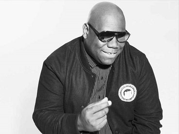
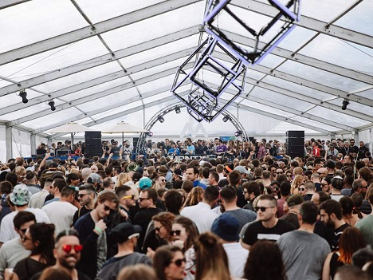

CARL COX
Carl Cox has become eponymous with the legacy of electronic music. The Oldham-born British DJ began his career in the late Eighties and since then has built up a reputation as one of the founding fathers of the techno-house genre.
His credits include massive sets at Ultra Music, Awakenings and BPM Festival, a regular spot on BBC Radio 1’s Essential Mix, and even a critically acclaimed Netflix documentary What We Started that has both reminded his existing followers of, and introduced new audiences to, the complex and rich world of underground music.
For fans, Cox’s annual residency at Space Ibiza became something of a pilgrimage – a bucket-list show that featured not only music from the man himself but also an array of new talent. It was sad news for many when the DJ announced the end of his residency, after 15 years at the Balearic club, in 2016.

CAPRICEES
Split between the daytime 'MDRNTY' stage – a crystalline, glass, mountain-top greenhouse providing uninterrupted views of the Valais Alps – and the night-time 'Moon' stage, Caprices provided both form and feeling for its 15th anniversary. On the roster for this year’s event were regulars Ben Klock , Ricardo Villalobos, Sven Vath and Adam Beyer b2b with wife and fellow Swedish DJ Ida Engberg. New to the mountain were Paul Kalkbrenner, Dubfire and Cobblestone Jazz.
Considering 2017's line-up had been hailed for its inclusion of females – the absence of women this year was hard to ignore. Other than Engberg, just two other women featured: minimal master Sonja Moonear, returning to the MDRNTY stage after last year’s much-talked about set, and Monika Kruse, the Terminal M boss and founding mother of the German techno scene. It was clear organisers had found it difficult to juggle demand to bring in diverse new talent, and showcase all the genre has to offer.